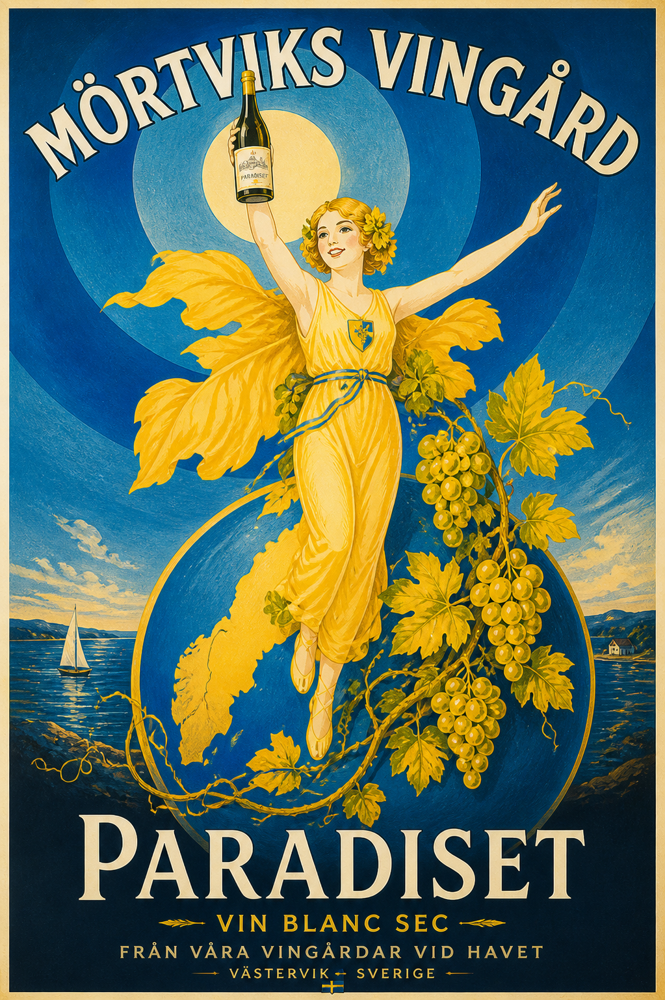

Det börjar med en idé – och ett fält
Allt startade med en bit mark, ett frö av en idé och en önskan att skapa något eget längs kusten utanför Västervik.
Det var en grå decembermorgon när vi stod på det plöjda fältet och tittade ut mot havet. Marken låg bar och väntan, med den sista höstens fukt fortfarande kvar i myllan. Det var då det slog oss på riktigt – att det här inte längre bara var en dröm. Det var ett beslut.
Idén om en vingård vid Mörtviks kusten hade funnits länge. Vi hade diskuterat det under långa sommarkvällar, studerat svenska odlingsförhållanden, och besökt andra pionjärer som vågat ta steget. Sverige är inget traditionellt vinland – men klimatet förändras, sommrarna bli längre och varmare, och rätt druvor på rätt plats kan ge alldeles fantastiska resultat.

Stora Mörtvik är en plats med karaktär. Kustnärheten ger ett mildare klimat, skyddat mot de värsta frosterna. Marken är sandig och genomsläpplig – precis vad druvrötterna behöver för att söka sig djupt och bygga komplexitet. Vi har valt att börja i liten skala, med druvor som trivs i nordliga förhållanden och som gett oss de bästa förutsättningarna för en bra start.
Den här bloggen är vår dagbok. Vi kommer att dela med oss av hur odlingen utvecklas, vad vi lär oss längs vägen och – med lite tur – hur det första riktiga skördeåret tar form. Följ med oss på resan.
"Vin är tålamod. Vin är plats. Vin är historia som börjar skrivas nu."
Vi är tacksamma för allt stöd vi redan fått från grannar, vänner och nyfikna vinfantaster. Det värmer att så många hejar på oss. Nu gäller det att leverera.
— Placeholder: Skriv in era namn och en personlig hälsning här. (Placeholdertext.)